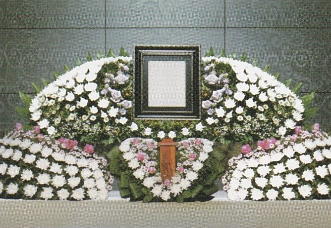
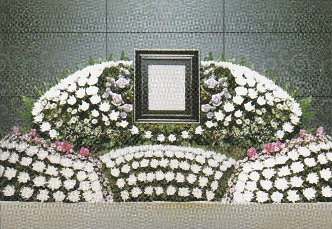
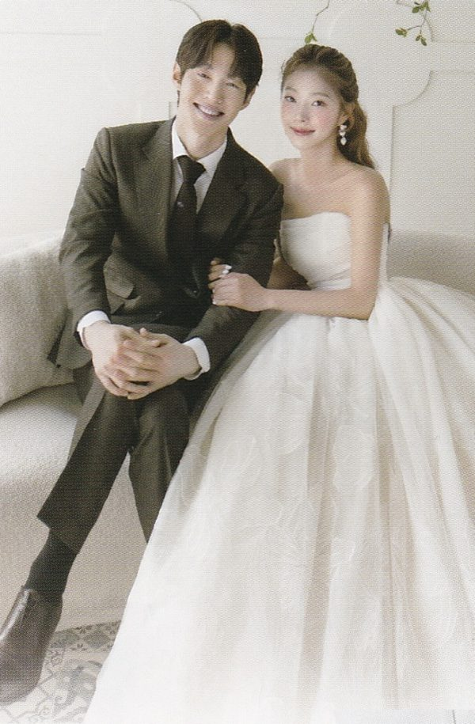
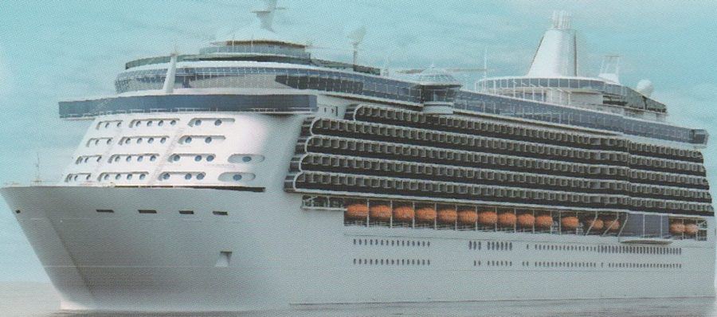

세 가지 중에 하나를 골라요
숫자가 클수록 더 오래 내고, 장례 때 받는 것도 더 좋아져요.
‘가입하기’를 누르면 보람상조 공식 가입 화면(전자청약)이 열려요. 599·699 화면에는 리버스 699, 비아젬 959도 있어요. 장례 구성은 699와 같거나 비슷하고, 리버스는 건강관리 프로그램, 비아젬은 추억을 담은 보석이 더해진 상품이에요. 자세한 건 상담 때 설명서로 보여 드릴게요.
장례 때 무엇을 받나요?
보람상조 공식 상품설명서를 쉬운 말로 옮겼어요.
| 499 | 599 | 699 | |
|---|---|---|---|
| 꽃 제단 | 보람 1호 (30만원 상당) | 보람 2호 (40만원 상당) | 보람 3호 (50만원 상당) |
| 헌화 꽃 | 30송이 | 30송이 | 50송이 |
| 고인 리무진 | 트래버스 왕복 200km | 트래버스 왕복 400km | 캐딜락 에스컬레이드 전국(섬 제외) |
| 손님 버스 | 왕복 200km | 왕복 400km | 전국(섬 제외) |
| 수의(고인 옷) | 명품 수의 | 특 명품 수의 | 특 명품 수의 |
| 가족 상복 | 양복·치마저고리 5벌 + 전통 상복 4세트·20벌 | 양복·치마저고리 5벌 + 전통 상복 필요한 만큼 | 양복·치마저고리 5벌 + 전통 상복 필요한 만큼 |
| 유골함(화장 시) | 고급품 | 최고급품 | 최고급품 |
| 의전관리사 (하루 8시간) | 3명 | 4명 | 4명 |
| 1회용품 | – | – | 200인분 |
거리를 넘으면 1km에 2,000원이 더 들어요. 고인 리무진은 돈을 더 내고 벤츠·캐딜락으로 바꿀 수 있어요(벤츠는 수도권만).


세 상품 모두 똑같이 들어 있는 것
- 관과 장례 물품오동나무 관(4.2cm), 화장할 때 쓰는 관, 멧베 2필, 관 덮는 천과 이불 등 고인을 모시는 물품이 들어 있어요.
- 가족 상복검정 양복·치마저고리 5벌을 빌려 드리고, 전통 상복은 필요한 만큼 드려요.
- 입관 물품베개, 습신, 염지, 명정, 칠성판 등 입관에 필요한 물품이 들어 있어요.
- 사람장례지도사 2명과 행사복지사 1명이 함께하고, 염습(고인을 깨끗이 모시는 일)은 왕실 방식으로 해 드려요.
- 특별 서비스장례식 고급 앨범과 3D 영상 앨범, 부고 문자·조화 배달·오시는 길 안내, 고인 이송 차량(시내 무료), 온라인 추모관(사진·영상·추모 글)을 요청하시면 해 드려요.
- 따로 내야 하는 돈장례식장 빌리는 돈과 손님 음식값은 들어 있지 않아요. 상담할 때 미리 계산해 드릴게요.
슬픈 일이 생기면 이렇게 해요
- 전화 한 통밤이든 새벽이든 1577-1009로 전화해요.
- 장례지도사가 와요고인을 모실 차와 함께 찾아와요.
- 3일 동안 함께해요빈소 준비부터 입관, 마지막 발인까지 옆에서 도와줘요.
- 끝난 뒤에도필요하면 장례 뒤 서류 정리도 알려 줘요.
장례 대신 결혼식·크루즈로 쓸 수 있어요
하나만 골라 쓸 수 있어요. 결혼식을 쓰면 그 계약으로 장례는 못 해요.
결혼식으로 쓰면 (599·699)

- 결혼식 날드레스·턱시도 1벌씩 빌려 주고, 신랑·신부 헤어와 메이크업, 부케 세트(부토니아·코사지 6개)를 해 줘요.
- 웨딩 촬영드레스 3벌·턱시도 1벌, 헤어·메이크업, 앨범 20쪽과 큰 액자, 식전 영상을 만들어 줘요.
- 본식 앨범40쪽 앨범 3권을 줘요.
- 덤양가 어머니 메이크업, 가족 액자 2개. 699는 신랑·신부 한복도 빌려 줘요.
예식장 빌리는 돈과 식사비는 들어 있지 않아요. 결혼식 문의 1688-2525.
크루즈 여행으로 쓰면

| 599 | 699 | |
|---|---|---|
| 고를 수 있는 곳 | 동남아 3개국 (싱가포르·말레이시아·태국) 2명 · 4박 6일 | 서부 지중해 (스페인·프랑스·이탈리아) 1명 · 8박 10일 |
| 또는 | 한국·일본 2명 · 5박 6일 | 알래스카 (미국·캐나다) 1명 · 8박 10일 |
- 들어 있는 것공항 마중, 왕복 비행기표, 배 타는 표, 항구·공항 세금, 기항지 관광, 전용 차량, 모든 식사, 1억원 여행자보험.
- 따로 내는 것기사·가이드 팁, 유류할증료(기름값), 개인 비용, 배 안에서 따로 쓰는 돈(술·스파 등).
크루즈는 떠나는 때의 가격으로 정해져서 배 회사·환율·계절에 따라 바뀔 수 있어요. 여권은 6개월 이상 남아 있어야 해요.
가입하면 받는 덤 혜택
- 보람복지몰 할인KTX·호텔·리조트·건강검진·가전·쇼핑을 최대 80%까지 싸게 살 수 있어요. 쓴 돈의 최대 5%가 쌓이고, 쌓인 돈으로 상조비를 낼 수도 있어요.
- 제휴카드로 내면 매달 할인보람 제휴카드로 상조비를 내면, 지난달 카드를 쓴 만큼 이번 달 카드값에서 깎아 줘요. KB국민 최대 27,000원 · 하나 최대 19,000원 · 롯데 최대 25,000원. 예를 들어 599(월 4만원)를 롯데카드로 내고 지난달 70만원 이상 썼다면 카드값에서 15,000원이 빠져 실제로는 25,000원만 나가요. 카드사 사정에 따라 바뀔 수 있어요. 카드별 할인표 보기
- 1년 치를 한 번에 내면 한 달 치 할인12달 치를 한꺼번에 내면 11달 치만 내요. 599라면 48만원 대신 44만원이에요. (리버스는 이 할인이 없어요.)
- 돈 나가는 날 고르기매달 5일·10일·15일·20일 중 편한 날로 정해요.
중간에 그만두면 얼마나 돌려받나요?
솔직하게 알려 드릴게요. 일찍 그만둘수록 돌려받는 돈이 적어요. 아래는 낸 돈 중 돌려받는 비율이에요.
| 낸 횟수 | 599 | 699 |
|---|---|---|
| 10번까지 | 0% | 0% |
| 12번 (599) / 11번 (699) | 약 7.7% | 약 8% |
| 30번 | 약 61.7% | 약 62% |
| 60번 | 약 77.3% | 약 77.6% |
| 90번 | 약 82.5% | 약 82.8% |
| 120번 | 약 85.1% | 약 85.4% |
| 150번 (599) / 175번 (699) | 약 87.6% | 약 87.9% |
공정거래위원회가 정한 계산법을 따른 보람상조피플(주) 표예요. 499 표는 상담 때 보여 드릴게요.
보람상조가 문을 닫으면 어떻게 되나요?
가장 많이 걱정하시는 부분이라 따로 정리했어요.
- ‘내상조 그대로’ 서비스가 있어요상조회사가 문을 닫거나 등록이 취소되면, 한국상조공제조합을 통해 그동안 낸 상조 납입금을 100% 인정받고, 이 서비스에 참여하는 다른 상조회사에서 상조 서비스를 이어서 받을 수 있어요. 몇 번을 냈든 낸 만큼 그대로 인정돼요.
- 낸 돈의 절반은 따로 지켜져요보람상조피플(주)는 2021년 2월부터 한국상조공제조합과 계약해, 고객이 낸 돈(선수금)의 50%를 보전하고 있어요.
- 회사 살림도 공개돼요2024년 12월 31일 기준 보람상조피플(주)의 총 선수금은 약 2,028억원, 고객에게 돌려줘야 할 돈(환급 의무액)은 약 1,464억원, 상조 관련 자산은 약 1,692억원이에요. 공인회계사의 회계감사도 받았어요.
‘내상조 그대로’는 상조 납입금에 대한 제도예요. 자세한 조건은 한국상조공제조합(1688-0972, kmaca.or.kr)에서 확인할 수 있어요.
자주 묻는 질문
가입한 지 오래되면 못 쓰나요?
아니요. 계약한 서비스는 언제든 쓸 수 있어요. 10년, 20년이 지나도 처음 정한 금액으로 장례를 해요.
다 내기 전에 일이 생기면요?
남은 돈만 내면 다 낸 것과 똑같이 장례를 받아요. 1577-1009로 전화하시면 돼요.
부모님 장례에도 쓸 수 있나요?
네. 가입한 상조를 부모님·형제 등 가족에게 넘겨서 쓰게 할 수 있어요.
장례식장 비용도 들어 있나요?
아니요. 장례식장 빌리는 돈과 손님 음식값은 따로예요. 상담할 때 지역 기준으로 미리 계산해 드릴게요.
중간에 그만두면 돈을 다 돌려받나요?
아니요. 낸 횟수에 따라 정해진 비율만 돌려받아요. 위의 ‘중간에 그만두면’ 표를 확인해 주세요.
가입 전에 꼭 알아 두세요
- 값이 올라도 걱정 없어요. 나중에 물가가 올라도 처음 정한 돈으로 장례를 해요. (세부 서비스는 회사 사정에 따라 조금 바뀔 수 있어요.)
- 다 내기 전에 일이 생겨도 괜찮아요. 남은 돈만 내면 다 낸 것과 똑같이 장례를 받아요.
- 가족에게 넘길 수 있어요. 부모님·형제의 장례에 쓰게 할 수 있어요.
- 안 쓴 물품은 돈으로 돌려주지 않아요. 받지 않은 서비스를 다른 것으로 바꾸거나 돈으로 받을 수는 없어요.
- 도와주는 사람은 시간 기준이 있어요. 의전관리사는 1명이 하루 8시간 기준이고, 더 필요하면 돈을 더 내요.
- 은행 적금이 아니에요. 이자가 붙지 않아요. 대신 회사에 문제가 생겨도 낸 돈의 절반은 한국상조공제조합이 지켜 줘요.
- 정확한 내용은 보람상조피플(주)의 계약서와 상품설명서가 기준이에요.